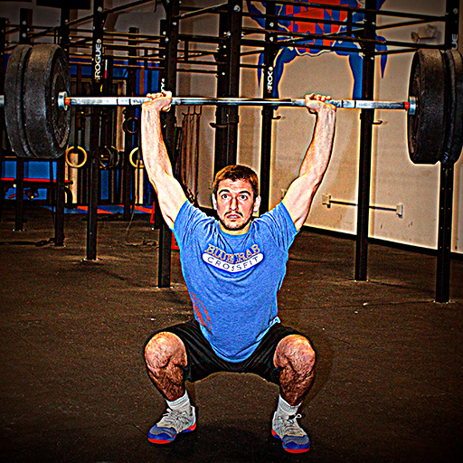

<section id="content" class="content-section">
	<div class="container" ng-controller="aboutController">
		<div id="ContentArea">
			<section id="coaches">
				<h1>COACH JOSH</h1>

				<div class="container">
					<div class="row">
						<div class="col-lg-4">
							
							<h2>Josh Burford, Owner</h2>
							<p>Josh is a Maryland native who began his professional
								career in the fitness industry in 2006 working with elementary
								to collegiate level athletes. In 2007 he became an NSPA CPT and
								began developing individualized strength and conditioning
								programs and boot camps for clients of all fitness levels. In
								2011 a friend recommended giving CrossFit a chance. He began
								training at CrossFit Diesel and was truly introduced to the
								sport of fitness. After working out at this CrossFit facility
								for 6 months he began building a garage gym in his parents barn.
								It wasnt until he came across a video on CrossFit.com (Hope for
								Kenya) that he realized he could influence not only athletes but
								the surroundings community in a positive way. He completed his
								CrossFit CFL1 trainer course in April of 2013. He was welcomed
								by CrossFit Titan to shadow some amazing coaches to help hone
								his skills and take his coaching to the next level.</p>

							<h4>Current Courses/Accreditation</h4>
							<p>CrossFit CFL1 Trainer Course</p>
							<p>NutraMetrix NC</p>

							<h4>Favorite Thing About CrossFit</h4>
							<p>"Watching people better themselves, and watching the
								CrossFit community reach outside the walls of the gym to help
								make a difference."</p>

							<h4>Favorite Quote:</h4>
							<p>"Limits, like fear, are often just an illusion." -Michael
								Jordan</p>
						</div>

					</div>
			</section>
		</div>
	</div>
</section>